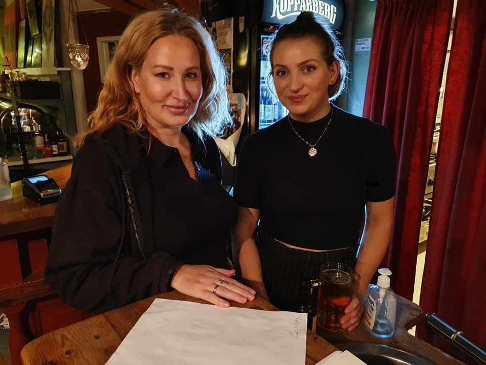
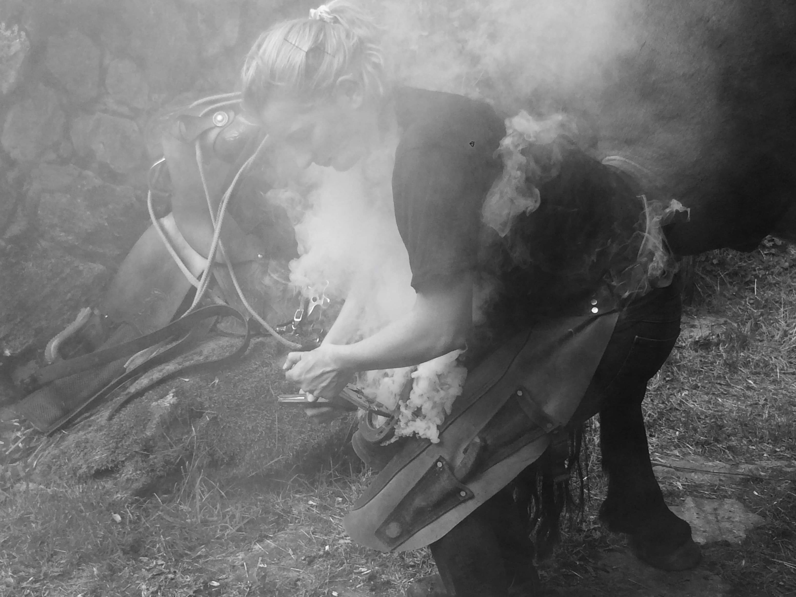
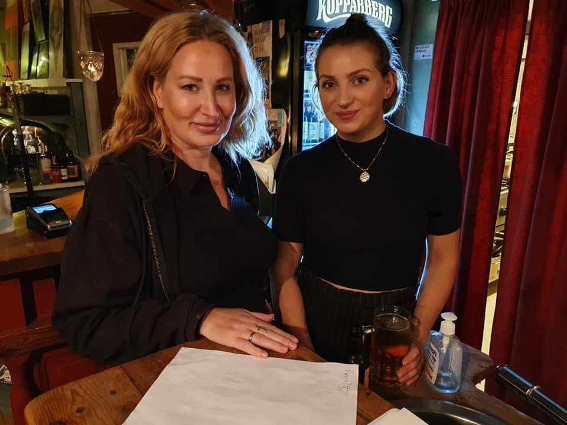
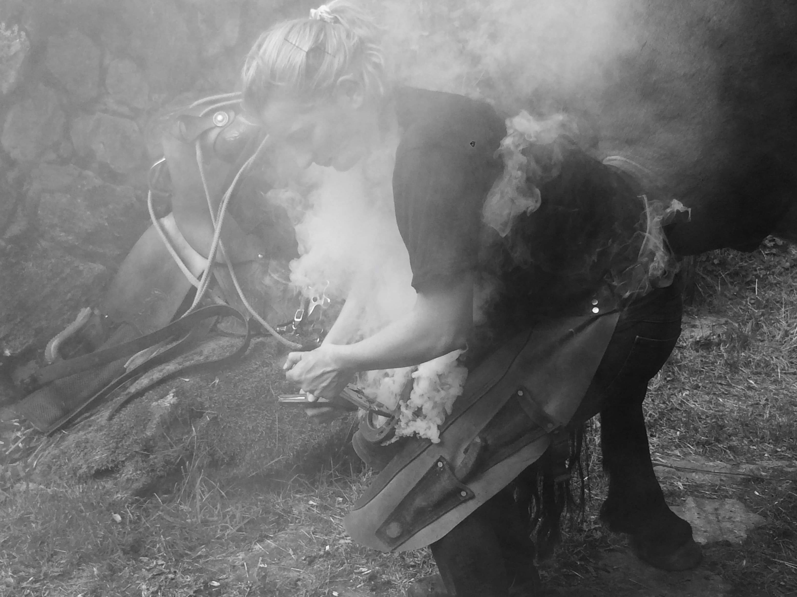

I’m a warmhearted, open-minded person that doesn’t take life too seriously but is hard-working and loyal as an employee. I am currently studying at Medieinstitutet, Gothenburg to become the competent Front End Developer I’m working for. Outside of the office, I love everything that has to do with working out and being in nature, preferably in the summer months but going out and breathing fresh air in the middle of nowhere is life at its best. With nature comes animals and as a plant-based person, I appreciate every living thing and always treat everyone with respect and humility.
As I am only three months into my education I have limited knowledge of the programming world. We have gone through a course in HTML and CSS and have just started with Javascript. Though I have relevant experience and skills in many other areas and professions. I have worked many years as a waitress and learned to manage demanding customers, plan events and make sure everyone feels comfortable. After my years as a waitress, I studied to become a farrier. My studies went well and after three years in school, and two years of hard work with my own company, I decided to take a new turn in life starting this education. Working with my own company gave me a deeper knowledge of handling customers and expanded my social skills. I now have my head entirely focused on learning as much as I can about programming with lots of excitement for the future.

 



 scroll
scroll
I want to show you a timeline of my projects since i started my
education. The first one is a replica of spotify. The second one is
a modernisation project, I chose too modernise IMDB's homepage. The
third and last is a log in form also made for the second project.
- More projects will come with time.


 scroll
scroll
Feel free to contact me at any time. I am for now in search of a suiting apprentice position.